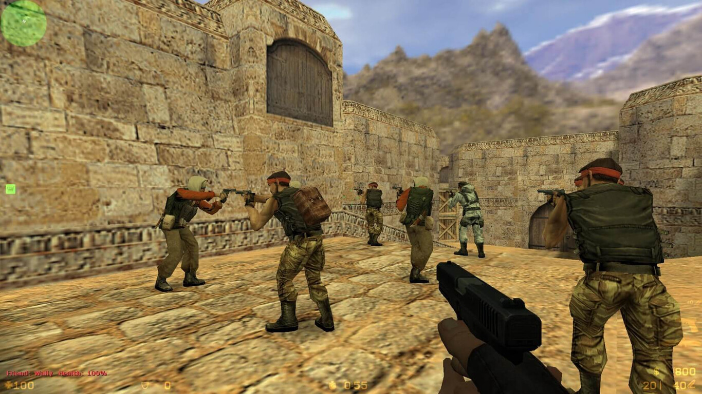
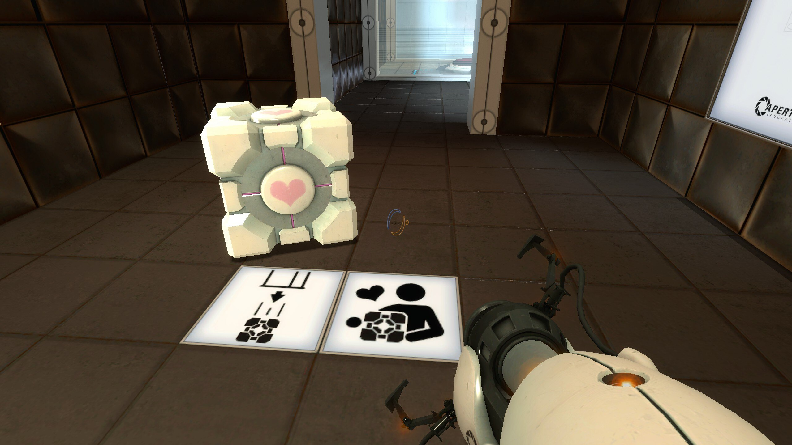
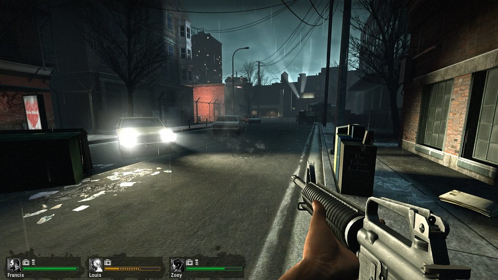

Franquicias desarrolladas por Valve
Counter Strike
Su primer lanzamiento fue el 9 de noviembre de 2000

Counter-Strike es una serie de videojuegos de disparos en primera persona multijugador para PC.
Nació como una modificación completa del juego Half-Life, título que también fue desarrollado por la
misma empresa.
Su modo de juego principal consta de dos equipos de 5 jugadores, terroristas y antiterroristas.
Estos últimos deben acabar con el equipo enemigo y evitar que planten un explosivo, en caso de que
ya haya sido plantado, desactivarlo.
Counter-Strike es uno de los deportes electrónicos con mayor impacto a nivel mundial. Agrupa varios
aspectos del espíritu deportista: trabajo de equipo, competencia, igualdad de oportunidades y con su
éxito es lógico que el juego haya dado a un gran número de jugadores el deseo de competir. Así pues
desde hace varios años equipos nacen en Internet con el fin de enfrentarse.
Portal
Su primer lanzamiento fue el 10 de octubre de 2007

Portal es una serie de videojuegos de plataforma y rompecabezas en primera persona. Sus 2
videojuegos
principales se centran en una mujer que es obligada a someterse a una serie de pruebas en el Centro
de
Enriquecimiento Aperture Science por parte de una maliciosa inteligencia artificial llamada GLaDOS,
que
controla la instalación.
La mayoría de las pruebas involucran el uso del Dispositivo de portal portátil de Aperture Science,
que
crea una conexión similar a un agujero de gusano del tamaño de un humano entre dos superficies
planas.
El personaje del jugador o los objetos en el mundo del juego pueden moverse a través de portales
mientras conservan su impulso. Esto permite utilizar complejas maniobras de lanzamiento para cruzar
espacios amplios o realizar otras hazañas para llegar a la salida de cada cámara de prueba.
Left 4 Dead
Su primer lanzamiento fue el 13 de noviembre de 2008

Left 4 Dead es una serie de videojuegos survival horror de videojuegos de disparos en primera persona.
Situada después de una pandemia apocalíptica, la trama de sus videojuegos enfrenta a cuatro
protagonistas contra hordas de humanos que han sido infectados con un virus similar a la rabia que causa
psicosis.
El jugador toma el control de uno de ellos a través de diversas campañas que tienen lugar en lugares
tanto
urbanos como rurales.
Su primer título, Left 4 Dead, ha sido reconocido como uno de los mejores videojuegos multijugadores
para PC de 2008 por varias organizaciones y publicaciones relacionadas con el mundo del videojuego.